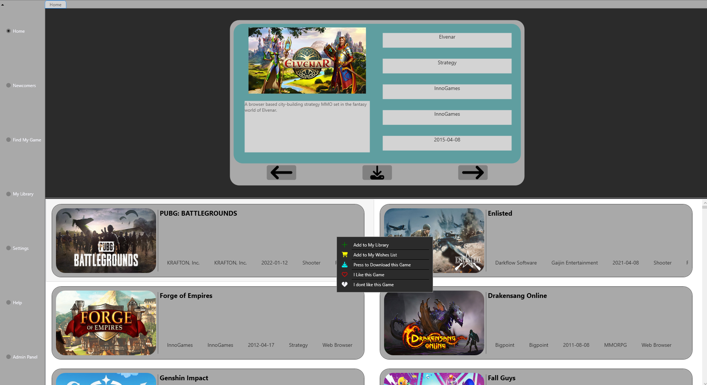
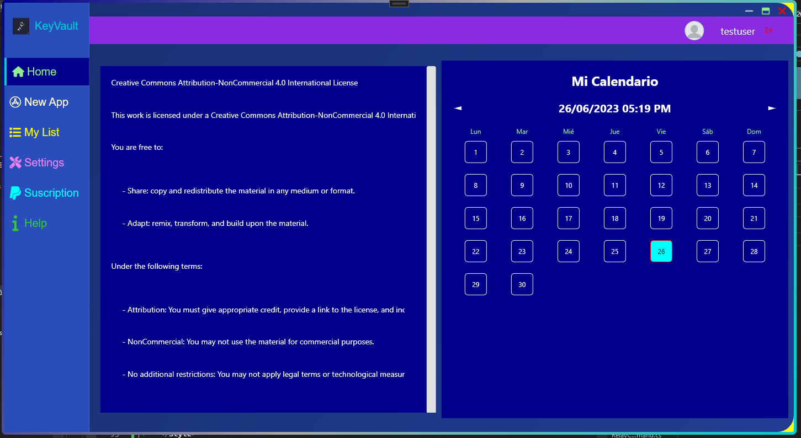
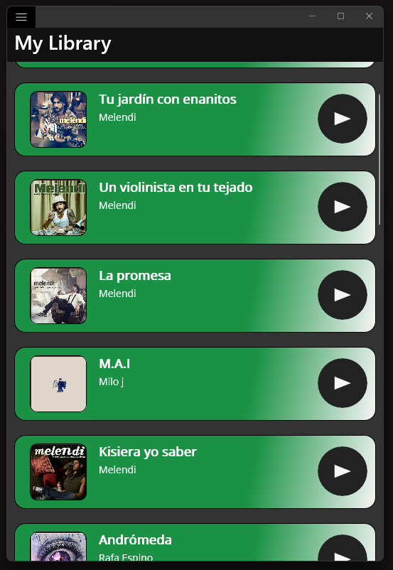

Ownership funcional
De la necesidad operativa al cambio validado y listo para release.
¿QUÉ NECESITA RESOLVER TU EQUIPO?
AUTONOMÍA OPERATIVA · ALCANCE MIDDLE
Soy DaniDev, Software Developer. Desarrollo, mantengo y doy soporte a productos empresariales: ERP en producción, aplicaciones B2B independientes e integraciones. Trabajo desde el análisis hasta la entrega con C#/.NET, VB.NET, SQL Server, APIs y Azure; también creo automatización de ingeniería y herramientas para medir rendimiento.
01 / PERFIL
Autonomía sobre el ciclo completo. Experiencia en sistemas, procesos y configuraciones diversas. Responsabilidad en soporte, revisión, entregas y fiabilidad.
No me limito a implementar el requisito que llega: averiguo qué necesita el negocio, cómo encaja en el sistema y qué puede romperse después.
Mi trabajo abarca desarrollo y mantenimiento de funcionalidades .NET de principio a fin: análisis, lógica de negocio, persistencia, interfaz, validación y entrega. También atiendo incidencias, doy soporte a usuarios y sigo los problemas hasta resolverlos en el producto.
He trabajado con muchas aplicaciones, clientes y configuraciones: gestión comercial y administrativa, operación, atención, producción, logística, cumplimiento e intercambio de datos. La variedad importa porque cada cambio debe adaptarse a las reglas y restricciones reales del entorno.
De la necesidad operativa al cambio validado y listo para release.
APIs y flujos de datos conectados con sistemas empresariales y procesos operativos.
Revisión de PR, criterio técnico compartido, pruebas de integración y CI.
Flujos con agentes de IA para planificación, implementación, pruebas y tareas de ingeniería repetibles.
02 / STACK Y DOMINIOS
Tecnologías documentadas en el portfolio y los proyectos. Sin rellenar el stack con herramientas genéricas.
C# · VB.NET · .NET · WinForms · WPF · .NET MAUI · APIs
SQL Server · T-SQL · procedimientos almacenados · OAuth 2.0 · integración de servicios
Azure · Git · code review · cherry-picks · pruebas de integración · CI · automatización con agentes
ENTORNOS DE NEGOCIO
HABILIDAD · INGENIERÍA ASISTIDA POR IA
Diseño y utilizo un sistema de agentes especializado en ingeniería de software para apoyar análisis y planificación técnica, implementación, revisión y diseño de pruebas. También creo automatizaciones y herramientas para medir rendimiento. La supervisión, las decisiones técnicas y la integración final siguen bajo mi responsabilidad.
FLUJO DE TRABAJO · RESUMEN PÚBLICO
Las herramientas proponen y automatizan trabajo; yo reviso, ajusto y decido qué se integra.
03 / PROYECTOS PERSONALES

Aplicación de escritorio en C# y WPF para organizar una biblioteca de videojuegos y explorar recomendaciones según preferencias.

Aplicación de escritorio WPF con estructura MVVM para gestionar credenciales. Incluye generador de contraseñas y almacenamiento con cifrado RSA; el sistema de roles figura como incompleto en el repositorio.

Proyecto experimental en .NET MAUI que trabaja autenticación OAuth 2.0 e integración con una API externa.
PRODUCTO PROPIO · GESTIÓN DE INVENTARIO · USO REAL
Aplicación multi-inventario para organizar productos, variantes, almacenes, ubicaciones y existencias; registrar movimientos y coordinar reservas, entregas y traspasos desde web o móvil.
Ya tiene clientes y usuarios reales. También la utiliza el club deportivo de rugby al que pertenezco; mantengo su identidad y sus datos privados.
Catálogo y stock por variante y ubicación, entradas y salidas, traspasos, reservas multiartículo, entregas, cancelaciones e histórico. QR y NFC agilizan el trabajo; búsqueda y formularios cubren esos mismos flujos.
La arquitectura y la base del backend en C# son casi en su totalidad trabajo mío. Utilicé IA principalmente como apoyo en la implementación del frontend, revisando e integrando sus resultados con criterio propio.
Puedo enseñar el producto en una instancia aislada y con datos ficticios, sin acceso editable al inventario de producción.
04 / EXPERIENCIA
Experiencia profesional desde 2023 entre ERP en producción, aplicaciones B2B independientes, soporte e integración de sistemas.
Producto en producción, soporte a usuarios e investigación de incidencias.
Más autonomía en funcionalidades, integraciones y aplicaciones B2B independientes.
Revisión de código, coordinación de releases y automatización técnica.
Desarrollo, mantenimiento y soporte de productos de software empresarial con autonomía de ejecución y alcance transversal.
05 / TRABAJO EN PRODUCCIÓN
Casos resumidos y anonimizados. El detalle refleja el trabajo documentado; se omiten clientes, IDs y componentes propietarios.
SOFTWARE DE NEGOCIO · CUMPLIMIENTO
La nueva normativa fiscal afecta a más que la salida de una factura: requiere trazabilidad, estados válidos, rectificativas y datos coherentes a través del ciclo de vida del documento.
Desarrollé y mantuve cambios en diferentes flujos sujetos a normativa, tratamiento de rectificaciones, validaciones, registro y consistencia de la información.
Traté el trabajo como flujo funcional y de datos: cada cambio debía encajar con las reglas existentes y preservar consistencia entre detalle, totales y estados.
Funcionalidades regulatorias incorporadas a releases del producto, con trabajo de corrección y evolución registrado a lo largo de varias entregas.
API · DATOS · INTEGRACIÓN DE SISTEMAS
Un proceso de negocio conectaba API, datos operativos y pantallas del ERP, y necesitaba evolucionar sin romper la manera en que los usuarios ya trabajaban.
Trabajé en servicios API, generación y evolución de datos, controles de recursos y formularios, integrando las piezas en el flujo existente.
El cambio cruza capas: contrato de integración, persistencia, compatibilidad de formularios y operación diaria deben seguir alineados.
La nueva funcionalidad quedó conectada con las herramientas y el flujo operativo del producto, y siguió evolucionando en entregas posteriores.
APLICACIÓN B2B INDEPENDIENTE · IMPORTACIÓN DE DATOS
Los datos de negocio llegaban en hojas Excel, pero debían ajustarse al esquema y las restricciones de la base de datos de destino.
Construí una aplicación B2B independiente del ERP con un importador genérico: las plantillas mapean la información del Excel a la base de datos correspondiente y sus restricciones.
Separé la herramienta del ERP y usé plantillas para configurar los mapeos, manteniendo las restricciones del destino como parte del proceso de importación.
Una aplicación aparte del ERP que permite reutilizar el flujo de importación mediante plantillas, en lugar de acoplarlo a un módulo concreto.
FIABILIDAD · SEGURIDAD · CALIDAD DE EQUIPO
En un producto en evolución, algunos fallos aparecen por interacciones entre hilos y por el estado compartido. Cambios transversales de persistencia, como el borrado lógico, también afectan consultas y flujos existentes.
Corregí problemas de concurrencia y condiciones de carrera e integré borrado lógico adaptando consultas y flujos que debían respetar el estado del registro. También corregí consultas vulnerables a inyección SQL, protegí credenciales y aislé fallos de escritura que podían cerrar la aplicación.
En revisión de PR identifiqué un patrón de acceso a datos que podía fallar al introducir transacciones. Convertí el razonamiento en un criterio de revisión reutilizable por el equipo y tuve en cuenta el impacto de los cambios de persistencia en consumidores existentes.
Menos exposición en datos sensibles y errores; un estándar preventivo de revisión; y CI nocturna para una suite de pruebas de integración.
¿Buscas autonomía técnica para evolucionar un producto complejo?
Hablemos06 / SIGUIENTE PASO
Cuéntame qué necesitas. Hablemos de desarrollo .NET, APIs, Azure, soporte de producto o automatización.
danidevsdbk@gmail.com